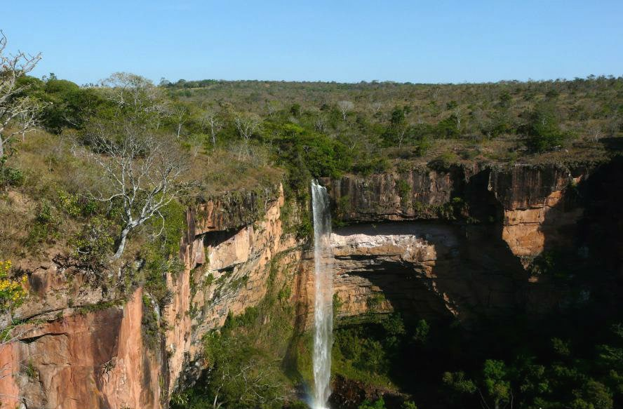

Seja bem vindo ao estado do Mato Grosso.
Mato Grosso fica na região Centro-Oeste do Brasil, com capital em Cuiabá. É um dos maiores estados do país, com muita área de cerrado, pantanal e floresta amazônica. A economia é forte na agropecuária, especialmente soja, milho, algodão e criação de gado. O estado também é conhecido pela biodiversidade e áreas naturais importantes, como o Pantanal e a Chapada dos Guimarães, que atraem muitos turistas.

voltar